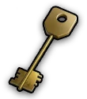
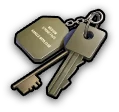
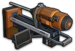
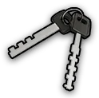

Clés ROB RUN : ce qu’ouvre chacune
Looty Bay compte 14 clés du coffre-fort, 13 clés de chambre et 6 clés et cartes spéciales pour les pièces les plus précieuses. Les clés se trouvent en ville ou s’obtiennent par troc avec Lenny. Ramasser une clé marque sa serrure sur votre carte. Seuls les criminels peuvent utiliser les clés, alors mettez d’abord votre masque.
Mis à jour le . Le jeu est en accès anticipé et change chaque semaine.
Comment marchent les clés
- Les clés des petits coffres-forts et des portes verrouillées se trouvent partout en ville. Un butin précieux attend souvent derrière les serrures.
- Ramasser une clé marque sa serrure sur votre carte. La description de la clé indique aussi ce qu’elle ouvre.
- Seuls les criminels peuvent utiliser les clés.
- Derrière la porte suspecte du Motel de Lenny, il y a un troc : échangez vos trouvailles contre des forets, des clés et d’autres outils de cambriolage.
Clés du coffre-fort

Les 14 s’appellent « Clé du coffre-fort ». La description de la clé indique quel coffre-fort elle ouvre :| District | Ce qu’elle ouvre |
|---|---|
| Sunny Beach | Ouvre le coffre-fort de l'hôtel Seasons de Sunny Beach. |
| Sunny Beach | Ouvre le coffre-fort de l'hôtel Reef de Sunny Beach. |
| Sunny Beach | Ouvre le coffre-fort de la pharmacie de Sunny Beach. |
| Sunny Beach | Ouvre le coffre-fort du café sur la jetée de Sunny Beach. |
| Sunny Beach | Ouvre le coffre-fort de la supérette de Sunny Beach. |
| Sunny Beach | Ouvre le coffre-fort du magasin d'électronique de Sunny Beach. |
| Centre-ville | Ouvre le coffre-fort dans la supérette dans la partie nord du centre-ville. |
| Centre-ville | Ouvre le coffre-fort de la supérette dans le quartier central du centre-ville. |
| Centre-ville | Ouvre le coffre-fort de la pharmacie du centre-ville. |
| Centre-ville | Ouvre le coffre-fort du café du centre-ville. |
| Centre-ville | Ouvre le coffre-fort de la station-service du centre-ville. |
| Loraine Hills | Ouvre le coffre-fort du manoir de Loraine Hills. |
| Loraine Hills | Ouvre le coffre-fort dans l'un des cottages de Loraine Hills. |
| — | Ouvre le coffre-fort du club de strip-tease. |
Clés de chambre

Les 13 s’appellent « Clé de chambre ». La description indique quelle pièce elle ouvre :| District | Ce qu’elle ouvre |
|---|---|
| Sunny Beach | Ouvre la pièce verrouillée du magasin d'armes de Sunny Beach. |
| Sunny Beach | Ouvre la pièce verrouillée du magasin d'équipement de Sunny Beach. |
| Sunny Beach | Ouvre la pièce verrouillée de la pharmacie de Sunny Beach. |
| Sunny Beach | Ouvre la pièce verrouillée de la supérette de Sunny Beach. |
| Sunny Beach | Ouvre la pièce verrouillée dans l'un des hôtels de Sunny Beach. |
| Centre-ville | Ouvre la pièce verrouillée du magasin d'armes du centre-ville. |
| Centre-ville | Ouvre la pièce verrouillée du magasin d'équipement du centre-ville. |
| Centre-ville | Ouvre la pièce cachée de gauche de la station-service du centre-ville. |
| Centre-ville | Ouvre la pièce cachée de droite de la station-service du centre-ville. |
| Centre-ville | Ouvre la pièce verrouillée de la pharmacie du centre-ville. |
| Centre-ville | Ouvre la pièce verrouillée de la supérette du centre-ville. |
| Loraine Hills | Ouvre la pièce verrouillée dans l'un des cottages de Loraine Hills. |
| — | Ouvre la salle VIP du club de strip-tease. |
Cartes d’accès et clés spéciales
 Grand hôtel : entrepôt secret
Grand hôtel : entrepôt secret Commissariat : pièce verrouillée
Commissariat : pièce verrouillée Banque : carte d’identité de la chambre forte à or
Banque : carte d’identité de la chambre forte à orSix clés et cartes spéciales ouvrent les pièces les plus précieuses de la ville :
| District | Ce qu’elle ouvre |
|---|---|
| Sunny Beach | Ouvre l'entrepôt secret du grand hôtel de Sunny Beach. |
| Centre-ville | Ouvre la chambre forte à or de la banque. |
| Loraine Hills | Ouvre la pièce verrouillée dans l'un des cottages de Loraine Hills. |
| Palmside | Ouvre la pièce verrouillée du commissariat. |
| Palmside | Ouvre l'armurerie du commissariat. |
| Palmside | Ouvre la chambre forte de la galerie. |
Comment obtenir le foret et la carte d’identité de la chambre forte à or
- Ouvrez des pièces verrouillées et piratez les ordinateurs qui s’y trouvent : cela remplit l’outil de piratage USB.
- Échangez un outil de piratage USB plein contre un foret, ou vendez-le.
- La chambre forte bancaire ne s’ouvre qu’avec un foret. Il travaille lentement et bruyamment, et dès qu’il est posé, tout Looty Bay le sait.
- Chaque coffre bancaire forcé remplit les clés de coffres bancaires. Une fois pleines, elles s’échangent contre la carte d’identité de la chambre forte à or ou se vendent.
Crochets, passe-partout et autres outils
 CrochetVous permet de déverrouiller des portes et des conteneurs sans déclencher l'alarme, ainsi que de forcer le coffre d'un véhicule qui ne vous appartient pas.
CrochetVous permet de déverrouiller des portes et des conteneurs sans déclencher l'alarme, ainsi que de forcer le coffre d'un véhicule qui ne vous appartient pas. Passe-partoutUne clé permettant d'accéder aux entrepôts protégés des autres joueurs.
Passe-partoutUne clé permettant d'accéder aux entrepôts protégés des autres joueurs. Crochet de coffreUn outil pour forcer le coffre du véhicule de quelqu'un d'autre.
Crochet de coffreUn outil pour forcer le coffre du véhicule de quelqu'un d'autre.
ForetUn outil pour forcer les chambres fortes bancaires. Il est long à utiliser et très bruyant. Mini-foretCompact et précis. Crochète rapidement les serrures de coffres-forts.
Mini-foretCompact et précis. Crochète rapidement les serrures de coffres-forts. Coupe-boulonPeut servir à couper la ligne électrique d'une colonie.
Coupe-boulonPeut servir à couper la ligne électrique d'une colonie. Outil de piratage USBSe remplit en piratant des ordinateurs dans des pièces verrouillées. Une fois plein, peut être troqué ou vendu à bon prix.
Outil de piratage USBSe remplit en piratant des ordinateurs dans des pièces verrouillées. Une fois plein, peut être troqué ou vendu à bon prix.
Clés de coffres bancairesSe remplissent en forçant des coffres bancaires. Une fois pleins, peuvent être troquées contre une carte d'identité de la chambre forte à or ou vendues à bon prix. Clé du yachtAccès à un palais flottant. Je ne peux pas voler de yacht, mais ceux qui en sont capables paieront une fortune pour cette clé.
Clé du yachtAccès à un palais flottant. Je ne peux pas voler de yacht, mais ceux qui en sont capables paieront une fortune pour cette clé.
FAQ
Comment utiliser une clé dans ROB RUN ?
Mettez votre masque : seuls les criminels peuvent utiliser les clés. Ramasser une clé marque sa serrure sur votre carte, et la description de la clé indique ce qu’elle ouvre.
Où trouver des clés ?
Les clés se trouvent en ville avec le reste du butin. Des clés et des outils s’obtiennent aussi par troc derrière la porte suspecte du Motel de Lenny.
Qu’ouvre la carte d’accès ?
La carte d’accès ouvre l’entrepôt secret du grand hôtel de Sunny Beach. Les autres clés spéciales ouvrent la pièce verrouillée et l’armurerie du commissariat, la chambre forte de la galerie, la chambre forte à or de la banque et une pièce dans un cottage de Loraine Hills.
Comment ouvrir la chambre forte bancaire ?
Seulement avec un foret, obtenu en échangeant un outil de piratage USB plein. Le foret travaille lentement et bruyamment, et tout Looty Bay apprend qu’il a été posé.
Crochet ou passe-partout : quelle différence ?
Le crochet ouvre les portes et les conteneurs sans alarme, ainsi que les coffres de voiture des autres. Le passe-partout ouvre les stockages protégés des autres joueurs : les coffres-forts et rayonnages de leurs bases.
Plus sur ROB RUN
- Carte de Looty Bay
- Guide du débutant
- Compte bancaire et blanchiment
- Que faire des cargaisons
- Devenir policier
- Calculateur de décodeurs
- Guides
Listes des clés et des outils, noms, descriptions et images : les fichiers du jeu (24 nov. 2026).